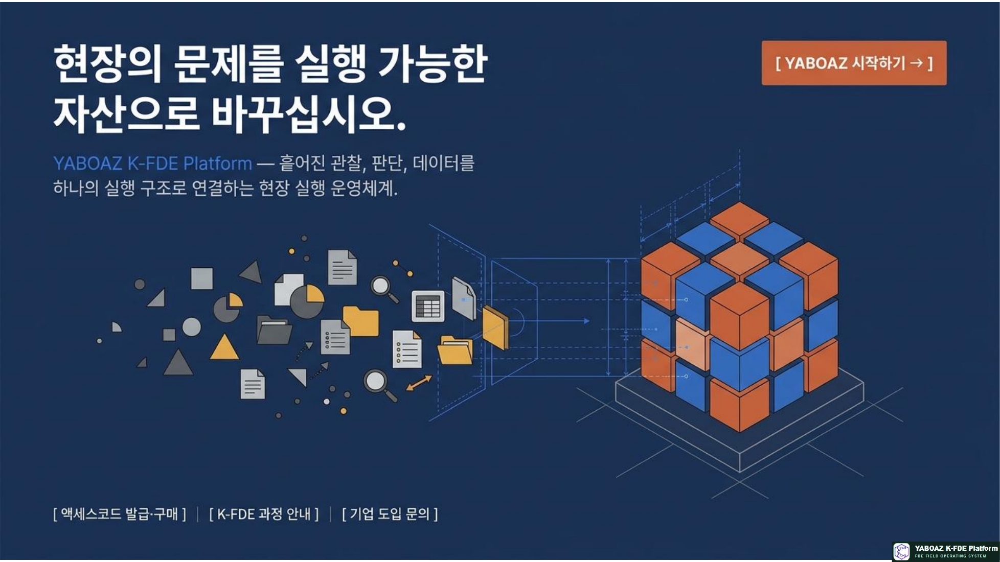
YABOAZ 현장 실행 운영 체계 참고 슬라이드 011. YABOAZ의 핵심 정의
YABOAZ는 단순한 교육 플랫폼이나 SaaS가 아닙니다. 현장의 흩어진 관찰·판단·데이터를 하나의 실행 구조로 연결하고, 그 결과를 반복 가능한 조직 자산으로 전환하는 K-FDE 현장 실행 운영 체계입니다.
현장의 신호 → 증거와 문제 → 구조화 → AI 판단 → 인간 검토 → 실행 → KPI 검증 → 플랫폼 자산화
현장의 문제를 실행 가능한 자산으로 바꾸십시오.
현장 발견진짜 문제와 반복되는 신호를 찾습니다.
구조화자료와 문제, 판단, 행동을 연결합니다.
실행AI와 사람이 함께 결정하고 업무를 움직입니다.
자산화작동하는 해결책을 다음 프로젝트에 재사용합니다.
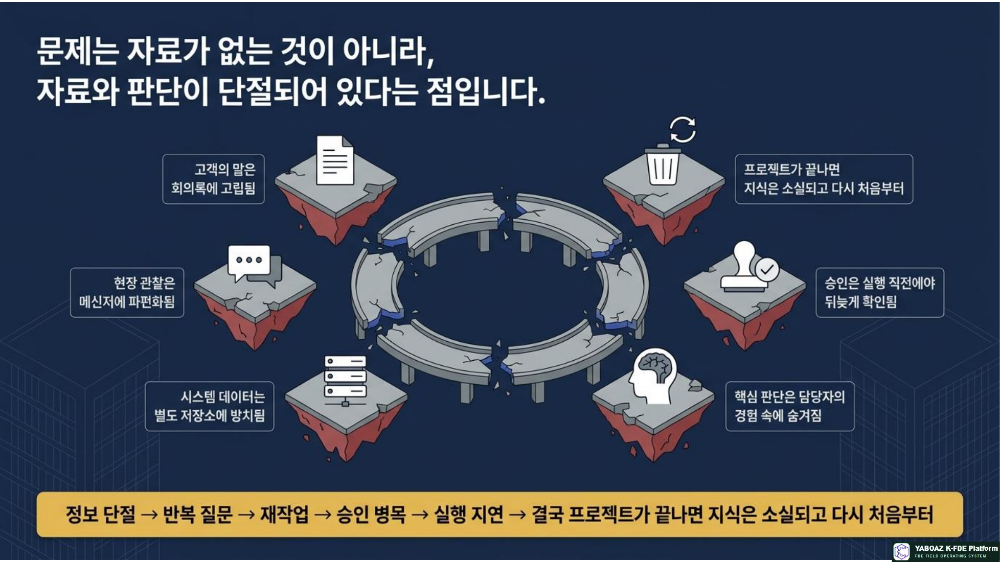
YABOAZ 현장 실행 운영 체계 참고 슬라이드 022. 문제 인식: 부족한 것은 자료가 아니라 연결입니다
기업에는 고객 인터뷰, 현장 관찰 기록, 내부 문서, 업무 시스템 로그, 담당자의 경험, 회의 메모, 의사결정 기록과 실행 결과 데이터가 이미 존재합니다.
하지만 자료가 흩어져 있으면 AI는 업무의 맥락과 판단 기준을 이해하기 어렵습니다. 중요한 것은 데이터를 많이 모으는 일이 아니라 자료와 문제, 판단, 실행, 행동이 유기적으로 연결되는 구조를 만드는 것입니다.
흩어진 입력인터뷰·관찰·문서·로그·회의·경험
연결되지 않은 문제정보는 있으나 의미와 책임, 다음 행동이 분리됨
YABOAZ의 전환증거를 객체·관계·상태·이벤트·규칙·행동으로 구조화
실행 결과AI 추천과 인간 승인, 워크플로, KPI와 자산화
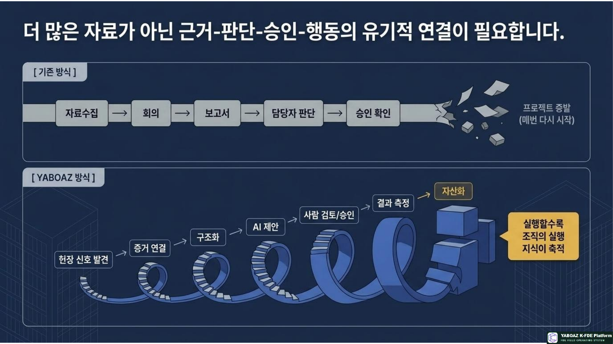
YABOAZ 현장 실행 운영 체계 참고 슬라이드 03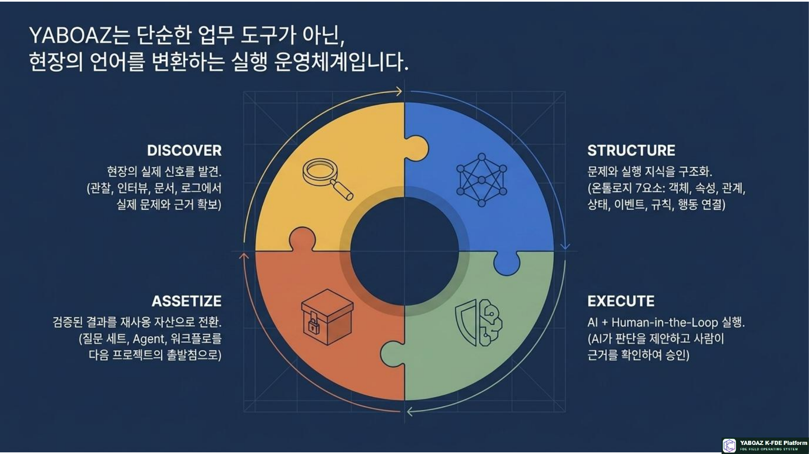
YABOAZ 현장 실행 운영 체계 참고 슬라이드 043. YABOAZ의 4단계 구조
01Discover · 발견
관찰, 인터뷰, 문서, 로그, 담당자의 경험을 모아 진짜 문제가 무엇인지 찾습니다. 공식 프로세스와 실제 업무의 차이, 반복 오류, 병목과 우회 업무를 확인합니다.
02Structure · 구조화
수집된 증거를 객체·속성·관계·상태·이벤트·규칙·행동으로 정리하여 AI가 이해할 수 있는 온톨로지 구조로 바꿉니다.
물류 예시주문·상품·창고·차량·기사·고객을 객체로 정의하고, 접수·피킹·출고·배송·완료·지연 상태와 재고부족·배송지연 이벤트를 연결합니다.
03Execute · 실행
AI Agent가 판단하고 사람이 승인하며, 워크플로와 MVP가 실행됩니다. 실행 결과는 기록되고 KPI로 측정됩니다.
04Assetize · 자산화
질문 세트, 온톨로지 모델, 판단 규칙, Agent 사양, 워크플로, KPI, 운영 매뉴얼을 다음 프로젝트에서 재사용할 수 있도록 축적합니다.
Discover → Structure → Execute → Assetize → 다음 현장으로 확장
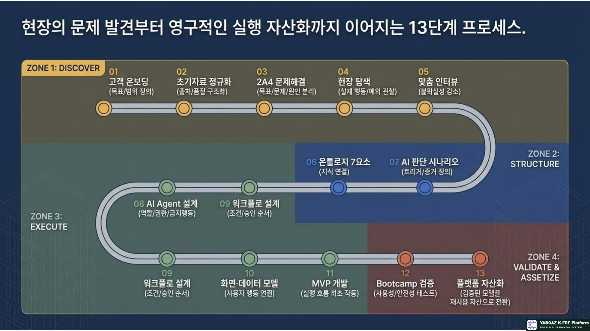
YABOAZ 현장 실행 운영 체계 참고 슬라이드 05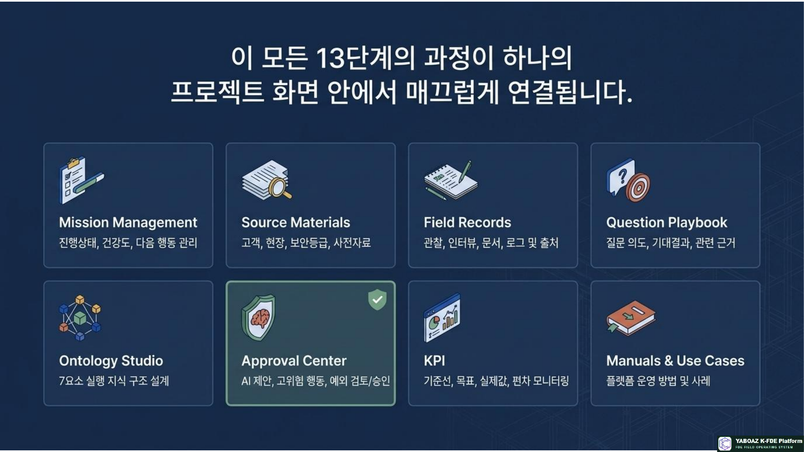
YABOAZ 현장 실행 운영 체계 참고 슬라이드 064. 13단계 실행 프로세스
01 고객 온보딩조직·업무·목표·책임자를 정렬합니다.
02 초기자료 정규화문서·로그·인터뷰 자료의 형식과 출처를 정리합니다.
03 2A4 문제해결문제를 실행 단위로 분해하고 우선순위를 정합니다.
04 현장 탐색실제 동선과 업무 흐름을 관찰합니다.
05 맞춤 인터뷰역할별 판단 기준과 예외를 확인합니다.
06 온톨로지 7요소객체·속성·관계·상태·이벤트·규칙·행동을 설계합니다.
07 AI 판단 시나리오무엇을 근거로 어떤 추천을 할지 정의합니다.
08 AI Agent 설계역할·도구·권한·승인·예외를 명세합니다.
09 워크플로 설계판단과 승인, 행동, 기록의 순서를 만듭니다.
10 화면·데이터 모델사용자 화면과 데이터 흐름을 연결합니다.
11 MVP 개발작은 업무 범위로 작동하는 해법을 구현합니다.
12 Bootcamp 검증사용자 테스트와 KPI로 효과를 확인합니다.
13 플랫폼 자산화검증된 해결책을 템플릿과 라이브러리로 등록합니다.
핵심 구간은 6단계부터 10단계입니다. 현장 문제를 온톨로지, AI 판단, Agent, 워크플로, UI·데이터 모델로 전환하는 구간입니다.
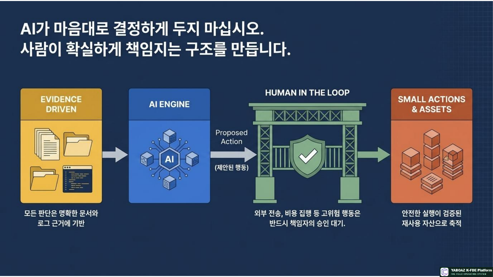
YABOAZ 현장 실행 운영 체계 참고 슬라이드 07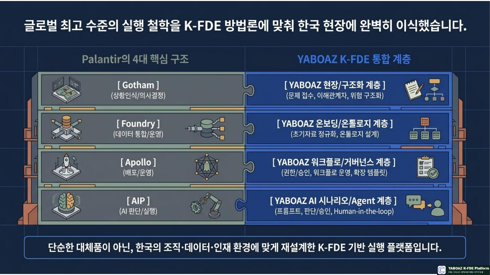
YABOAZ 현장 실행 운영 체계 참고 슬라이드 085. YABOAZ의 실행 엔진
AI Agent데이터를 읽고 맥락을 파악하며 판단과 추천안을 제시합니다.
Human Gate중요한 판단과 고위험 행동은 사람이 검토하고 승인합니다.
Vibe Coding현장 요구를 빠르게 화면과 프로토타입으로 구현합니다.
MVP최소 실행 해법을 실제 현장에서 검증합니다.
AI가 분석하고 추천한다.
사람이 검토하고 승인한다.
승인된 행동만 시스템이 실행한다.
결과가 기록되고 KPI로 측정된다.
핵심 원칙은 AI가 마음대로 결정하지 않는 것입니다. 의료, 안전, 금융, 인사, 법무, 재난, 공공행정, 대외 공지와 개인정보 처리에서는 Human Gate를 기본값으로 둡니다.
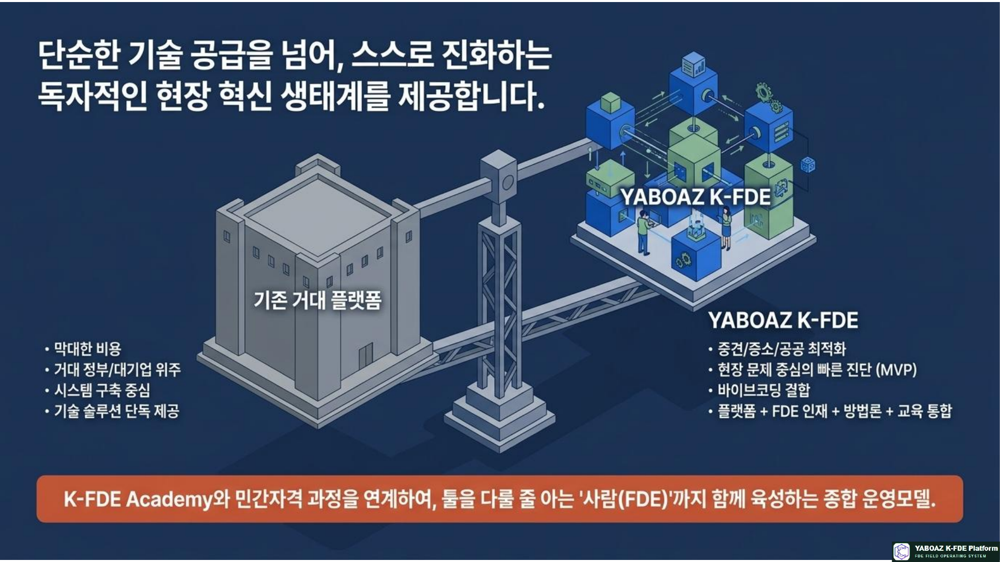
YABOAZ 현장 실행 운영 체계 참고 슬라이드 096. 플랫폼 자산화의 기본 단위
YABOAZ는 프로젝트가 종료된 뒤 보고서만 남기지 않습니다. 무엇이 문제였는지, 어떤 데이터를 사용했는지, 어떤 구조와 Agent, 워크플로를 적용했는지, 어떤 KPI가 개선되었는지, 무엇을 재사용할 수 있는지를 기록합니다.
자산명 → 해결 문제 → 적용 도메인 → 필요 데이터 → 온톨로지 모델 → 판단 규칙 → Agent 사양 → 워크플로 → KPI → 운영 매뉴얼 → 적용 조건 → 제한 사항
질문 자산현장 인터뷰와 문제 발견, 성과 측정 질문
구조 자산객체 모델, 관계 모델, 상태 전이, 데이터 사전
실행 자산Agent 사양, 승인 규칙, 워크플로와 화면
검증 자산KPI, Bootcamp 기록, 운영 매뉴얼과 평가표
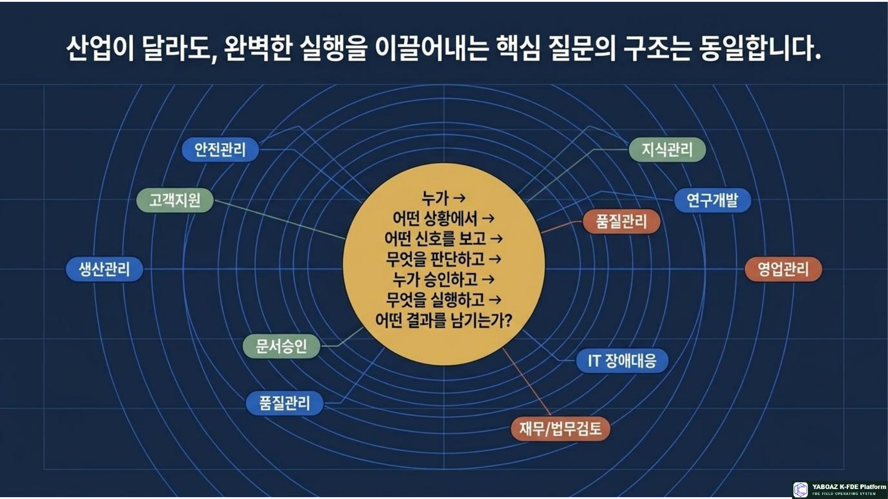
YABOAZ 현장 실행 운영 체계 참고 슬라이드 107. Palantir와 YABOAZ의 관계
| 구분 | Palantir | YABOAZ |
|---|
| 정체성 | 제품화된 글로벌 엔터프라이즈 AI 운영체계 | 한국형 FDE 실행·교육·검증·자산화 체계 |
| 구성 | Gotham · Foundry · Apollo · AIP | Discover · Structure · Execute · Assetize |
| 핵심 역할 | 데이터·온톨로지·AI·배포를 통합 | 기술과 현장 문제를 연결하고 실행을 축적 |
| 관계 | 글로벌 기술 스택 | 한국 현장에 적용하는 실행 계층 |
Palantir와 YABOAZ는 경쟁 관계로만 볼 것이 아니라, 글로벌 기술 스택과 한국형 현장 실행체계를 결합하는 구조로 이해할 수 있습니다.
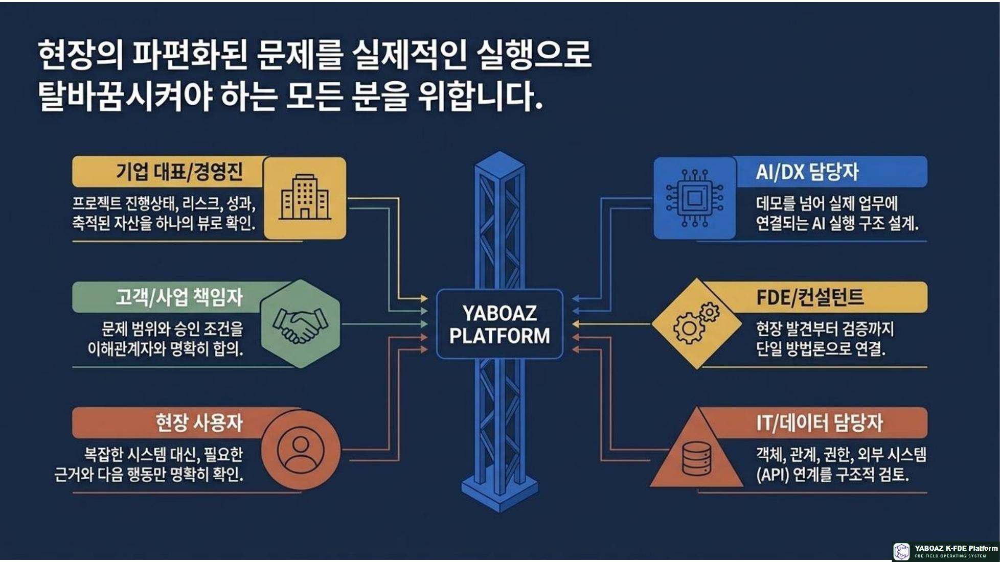
YABOAZ 현장 실행 운영 체계 참고 슬라이드 118. K-FDE Academy와의 연결
YABOAZ는 K-FDE Academy의 실습 운영 기반이 될 수 있습니다. 교육생은 단순히 이론을 배우는 것이 아니라 실제 현장 과제를 실행하고 결과를 자산으로 남깁니다.
K-FDE Academy → 배우기 → 현장 문제 발견 → 온톨로지 설계 → Agent·워크플로 → MVP 개발 → KPI 검증 → 플랫폼 자산 등록 → 실제 프로젝트 참여
교육생이 만드는 포트폴리오현장 문제 해결 경험, 온톨로지 설계 결과물, AI Agent, 바이브코딩 MVP, KPI 검증 사례
YABOAZ가 제공하는 환경현장 자료 관리, 설계 공간, MVP 실행, 검증 기록, 자산 라이브러리와 프로젝트 이력
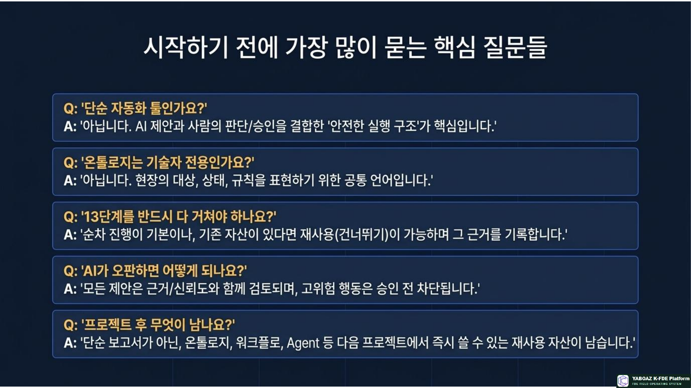
YABOAZ 현장 실행 운영 체계 참고 슬라이드 129. 기업을 위한 현장 실행 체계
기업은 YABOAZ를 통해 AI 도입 과제를 선정하고, 부서 간 데이터를 연결하며, PoC를 운영으로 전환하고, 성공 사례를 전사 자산으로 확산할 수 있습니다.
현장 문제 발굴 → 우선순위 선정 → 데이터·업무 분석 → 온톨로지 → AI 시나리오 → MVP → Bootcamp → KPI → 운영 전환 → 자산 등록
확보하는 실행 결과검증된 업무 자동화, 내부 FDE 인력, 재사용 온톨로지와 업무별 Agent
축적되는 조직 자산승인과 책임체계, 운영 로그, 개선 루프, 산업별 템플릿과 자산 라이브러리
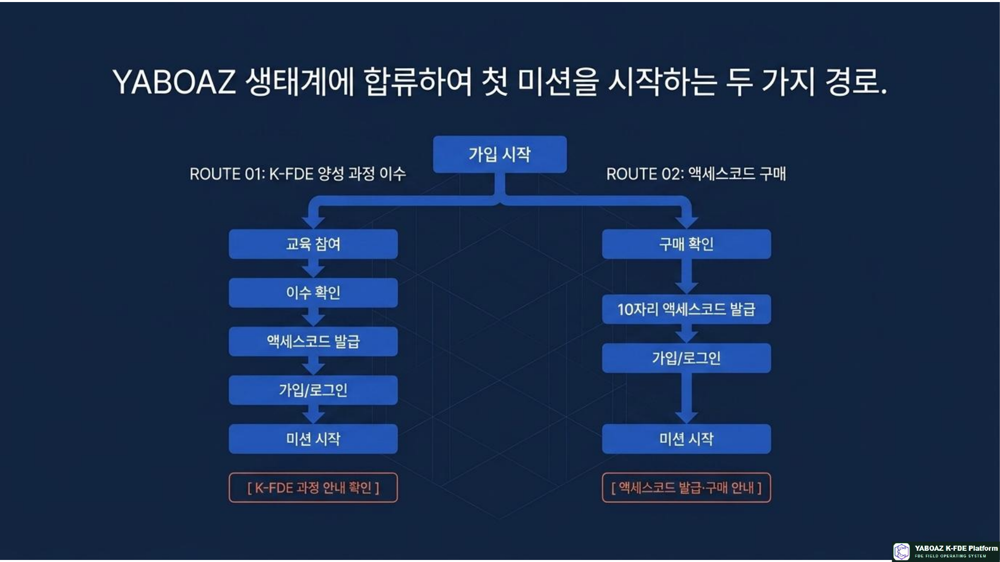
YABOAZ 현장 실행 운영 체계 참고 슬라이드 1310. YABOAZ가 만드는 가치
현장 가치업무시간과 반복업무, 오류를 줄이고 의사결정 속도를 높입니다.
조직 가치개인의 경험과 암묵지를 표준화된 조직 지식으로 바꿉니다.
기술 가치데이터, Agent, 워크플로, 인간 승인과 감사체계를 연결합니다.
사업 가치한 번의 문제 해결을 반복 가능한 사업 자산으로 전환합니다.
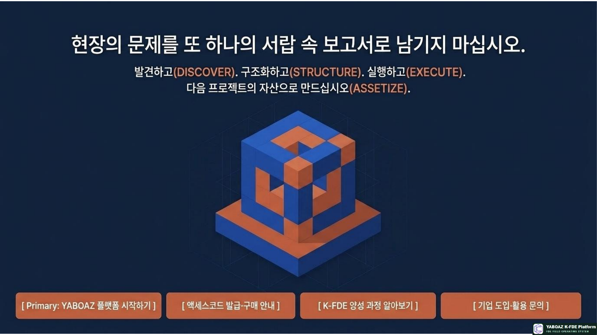
YABOAZ 현장 실행 운영 체계 참고 슬라이드 1411. 최종 포지셔닝
YABOAZ의 정의YABOAZ는 현장의 흩어진 신호를 발견하고, 구조화하고, AI와 사람의 협업으로 실행하며, 검증된 결과를 반복 가능한 플랫폼 자산으로 전환하는 K-FDE Field Operating System이다.
START SMALL.
LEARN FAST.
ASSETIZE WHAT WORKS.
작게 시작하고, 빠르게 배우고, 작동하는 것을 자산화하라.
현장의 문제를 실행 가능한 자산으로 바꾸십시오.